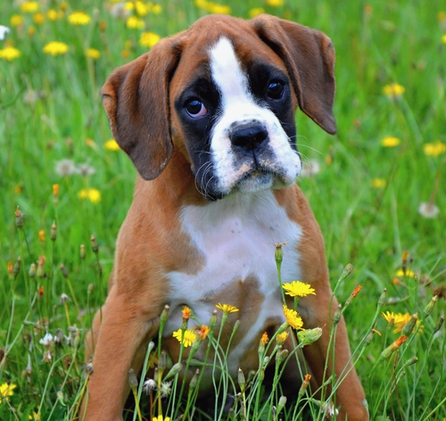

ORIGEN
Es una raza Alemana que se creo a fines del siglo XIX, los molosos ya usaban esos perros de lucha en las guerras y en la caza de oso o toro Salvaje, con el tiempo esa raza se ha adaptado a nuevas tareas actualmente, es un perro de defensa.Es de cuerpo atletico, de potente musculatura tiene una estructura cuadrada y unos huesos fuertes, el peso del macho es de 30 a 31kg y la hembra pesa de 25 a 27kg, su altura es de 57 a 63cm.
CUIDADOS DIARIOS
Se debe educar desde cachorro.Es un perro que no debe de estar en interior necesita espacio, de preferencia un jardin o un lugar amplio donde pueda correr o moverse en todo el dia.
450 a 550g de alimento completo seco.
Ambiente agradable y limpio
Requiere de un cepillado diario
Es apegado a sus dueños y descata por tener un gran cariño a los niños, le cuesta trabajo estar quieto, le gusta jugar y que se ocupen de el..